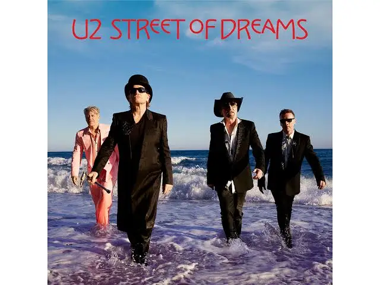

U2

U2 är en irländsk rockgrupp bildad i Dublin 1976. Bandet har sålt mer än 170 miljoner album och erhållit 22 Grammys.[2][3]
U2 har med skivor som The Joshua Tree och Achtung Baby och låtar som One, With or Without You, Beautiful Day, Sunday Bloody Sunday, Pride (In the Name of Love) och I Still Haven't Found What I'm Looking For, blivit ett av världens största musikfenomen.[4]